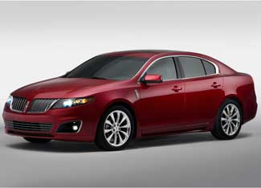

While most automakers at this year's North American International Auto Show are emphasizing new ways to incorporate electric batteries into their vehicles, a small group of automakers is instead emphasizing their advanced engine technologies.
Included in this group is Ford, which is debuting its "EcoBoost" engine in the 2010 Lincoln MKS, a four-door sedan. The 3.5-liter EcoBoost V-6 engine delivers the performance of a larger V-8 engine through the direct injection of gasoline into the engine cylinders, as well as through the use of dual turbochargers, which pump more air into the engine for more power. The engine will be available on the Lincoln MKS this summer, and by 2013, more than 90 percent of Ford's North American lineup will be available with the EcoBoost engine. The EcoBoost engine will also be available on the 2010 Ford Flex crossover, and Ford incorporated it into the Lincoln C concept, which pairs the engine to a lightweight, dual-clutch, six-speed transmission to achieve a projected 43 miles per gallon during highway driving.
While Ford is wielding its technological prowess in advanced gasoline engines, Audi and Volkswagen are displaying the latest in clean diesel technologies. Audi unveiled the Sportback concept, a four-door hatchback with a 3.0-liter, V-6, turbocharged direct-injection (TDI) diesel engine that includes an automated system to shut down the engine when stopped at a traffic light. The result is an estimated fuel economy of nearly 40 miles per gallon. Volkswagen also flexed its diesel-fueled muscles by revealing the Concept BlueSport, a clean-diesel compact roadster that can reach 60 miles per hour in 6.2 seconds, but can also achieve a combined fuel economy of 42 miles per gallon.
|
 FORD The 2010 Lincoln MKS is the debut vehicle for Ford's "EcoBoost" engine, which will be available in more than 90 percent of Ford's North American lineup by 2013. |
|
|